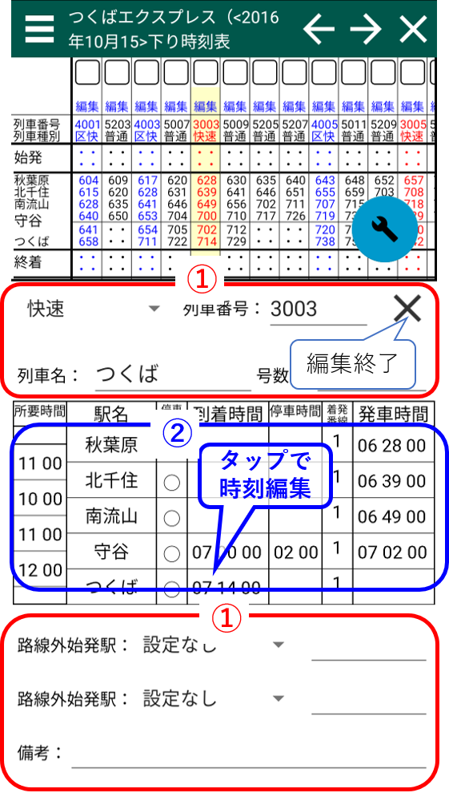

列車編集画面
スクショの番号の対応した説明があります。 ①：列車情報
- 列車種別は候補の中から選択して下さい。
- その他の項目は直接入力してください。なお、号数の「号」は消さないでください。
②時刻入力部分
編集できるのは発着番線、停車種別、到着時間、出発時間です。 所要時間と停車時間は編集できませんのでご注意ください。
到着時刻と発車時刻の各時刻をタップすることで時刻編集画面を開きます。 ここから時刻の編集を行います。
時刻編集画面

時刻直接入力
3桁から6桁の時刻として認識できる正の数値を入力してください。 閉じるボタンを押すと時刻が反映されます。時刻削除
このボタンを押すと該当時刻が削除されます。時刻移動コマンドボタン
ボタンに書いている量だけ時刻がスライドします。時刻繰り上げ・繰り下げ選択
繰り上げにチェックが入っているときは、時刻移動コマンドボタンを押したときに、 その列車における該当駅より前の駅の時刻も一緒にスライドします。
繰り下げにチェックが入っているときは、該当駅よりも後に駅時刻も一緒にスライドします。
繰り上げと繰り下げは同時に用いることができます。 この時、全ての時刻がスライドします。